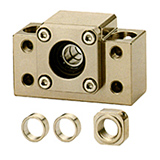

滾珠螺桿系列
轉造級滾珠螺桿
滾珠螺桿庫存區
線性滑軌系列
KM
線性模組系列
滾珠螺桿支撐座
高荷重螺桿支撐座
馬達傳動座
聯軸器
精密鎖定螺帽
利茗減速機
直線軸承
LMC
單軸心式滑軌
LGD
雙軸心式滑軌
滾珠螺桿支撐座
Support Units
下載規格表
螺桿支撐座採用日系軸承，設計尺寸精巧，並易於安裝，可以安裝在狹窄空間裡，由於軸承已適當預壓，毋需再加工處理即可組裝至設備，減少了組立的工時並提昇了組立的精度。
化學鎳材質適用無塵室環境，染黑材質適用一般環境，螺桿支撐座所有型式的產品均於品檢出廠前預先充填適量的鋰皂基抗極壓潤滑油脂，並藉由產品上的密封設計，使之長時運轉免需保養。
多樣的設計組合，提供不同需求環境的選用：
標準型－輕預壓
：剛性與精度適用於輕負荷的場所，常運用於精密檢測儀具。
標準型－重預壓
：剛性較輕預壓高，適用於重負荷與高精度的場所，常運用於工具機類的產業設備。
經濟型－高剛性
：適用於對有成本支出限制，但須有預壓剛性的場所。
經濟型－通用性
：適用於對精度及安全係數等相關條件要求最低的場所，並做成本最低支出考量的場所。
AK
方型固定側

染黑 (適用一般環境)
化學鎳 (適用無塵室環境)
C7 級使用之軸承無預壓處理，軸向最大間隙 0.018mm。
C5 級使用之軸承經預壓處理，軸向 0mm 間隙。
軸承皆採用日系品牌大廠。
AF
方型支撐側
染黑 (適用一般環境)
化學鎳 (適用無塵室環境)
染黑使用之軸承採用雙鐵蓋。
化學鎳使用之軸承採用雙塑膠蓋。
軸承皆採用日系品牌大廠。
BK
方形固定側
染黑 (適用一般環境)
化學鎳 (適用無塵室環境)
C7 級使用之軸承無預壓處理，軸向最大間隙 0.018mm。
C5 級使用之軸承經預壓處理，軸向 0mm 間隙。
軸承皆採用日系品牌大廠。
BF
方形支撐側
染黑 (適用一般環境)
化學鎳 (適用無塵室環境)
染黑使用之軸承採用雙鐵蓋。
化學鎳使用之軸承採用雙塑膠蓋。
軸承皆採用日系品牌大廠。
EK
凸形固定側
染黑 (適用一般環境)
化學鎳 (適用無塵室環境)
C7 級使用之軸承無預壓處理，軸向最大間隙 0.018mm。
C5 級使用之軸承經預壓處理，軸向 0mm 間隙。
軸承皆採用日系品牌大廠。
EF
凸形支撐側
染黑 (適用一般環境)
化學鎳 (適用無塵室環境)
染黑使用之軸承採用雙鐵蓋。
化學鎳使用之軸承採用雙塑膠蓋。
軸承皆採用日系品牌大廠。
FK
圓形固定側
染黑 (適用一般環境)
化學鎳 (適用無塵室環境)
C7 級使用之軸承無預壓處理，軸向最大間隙 0.018mm。
C5 級使用之軸承經預壓處理，軸向 0mm 間隙。
軸承皆採用日系品牌大廠。
FF
圓形支撐側
染黑 (適用一般環境)
化學鎳 (適用無塵室環境)
染黑使用之軸承採用雙鐵蓋。
化學鎳使用之軸承採用雙塑膠蓋。
軸承皆採用日系品牌大廠。
LK
低型固定側
染黑 (適用一般環境)
化學鎳 (適用無塵室環境)
C7 級使用之軸承無預壓處理，軸向最大間隙 0.018mm。
C5 級使用之軸承經預壓處理，軸向 0mm 間隙。
軸承皆採用日系品牌大廠。
LF
低型支撐側
染黑 (適用一般環境)
化學鎳 (適用無塵室環境)
染黑使用之軸承採用雙鐵蓋。
化學鎳使用之軸承採用雙塑膠蓋。
軸承皆採用日系品牌大廠。
LFA
低型支撐側
螺桿支撐座選用注意事項：
依照螺桿支撐座『
安裝方式
』選擇螺桿固定座系列。
安裝方式：有平面安裝型與崁入安裝型兩種。
再以螺桿外徑與中心高選擇型號。
選擇螺桿支撐座『精度型式』 ，以標準型、經濟型區分。
再以『使用環境』選擇表處方式：
鍍化學鎳或染黑
。
染黑
：一般環境適用(低濕度)。
化學鎳(或稱化鎳、無電解鎳)
：無塵室適用。
Download
下載支撐座規格表
下載 螺桿支撐座 CAD 檔案
鎖固螺帽
Lock Nut
RN
鎖固螺帽
Lock Nut
RN
重荷型鎖固螺帽
Heavy-load Lock Nut
返回首頁
|
產品介紹
|
滾珠螺桿
|
線性滑軌
|
線性模組
|
聯軸器
|
檔案下載
|
聯絡我們
Copyright
© 2018
HONG YI PRECISION CO.,LTD.
鴻翊精密股份有限公司
TEL: 04-2426 5828 FAX: 04-2425 9082
台中市北屯區環中路一段1702-3號
網站設計